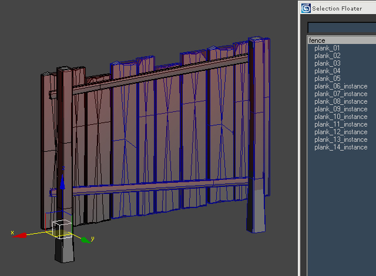

Обзор
Разделы
Имейте в виду, что эта функция изначально не работает на консолях, и в результате ее общее удобство использования считается сомнительным.
Обычно каждая отдельная сетка модели приводит к дополнительному вызову отрисовки для движка. Чтобы уменьшить количество вызовов отрисовки, движок может использовать аппаратную функцию, которая называется «инстансированием геометрии». Используя эту функцию, движок может комбинировать идентичные сетки модели и рисовать их за один вызов отрисовки. Создание экземпляров в основном полезно для сложных объектов, состоящих из множества отдельных элементов, имеющих одинаковую геометрию, но разное преобразование.
Общая настройка в инструментах DCC
Движок может автоматически определять, когда можно создавать экземпляры элементов объекта. Однако есть несколько правил, которые необходимо соблюдать, иначе создание экземпляров будет невозможно:
- Создаваемые сетки должны иметь одинаковые координаты и индексы вершин, одинаковые координаты UV и один и тот же материал.
- Только трансформация может быть разной. Элементы можно перемещать, вращать и равномерно масштабировать.
- Именование не важно.

Забор, состоящий из экземпляров элементов (экземпляры окрашены в синий цвет).
Общие советы по рабочему процессу моделирования
- Используйте функцию экземпляра, чтобы обеспечить идентичность данных сетки.
- Вращайте и масштабируйте объекты, чтобы получить разнообразие.
- Не применяйте Сбросить XForm на экземплярах, потому что данные вершин станут другими.
Настройка в Sandbox
В Sandbox не требуется никакой специальной настройки, просто поместите объект в виде кисти или простого объекта.
Отладка
r_GeomInstancing
Toggles HW geometry instancing.
Usage: r_GeomInstancing [0/1]
Default is 1 (on). Set to 0 to disable geom. instancing.